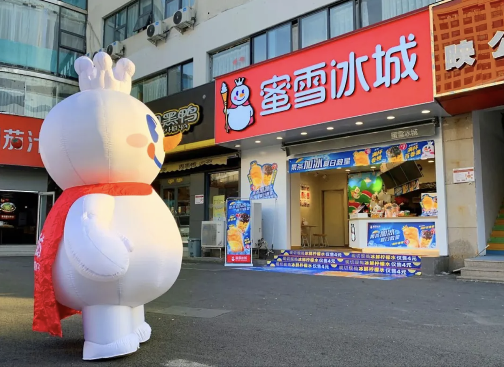
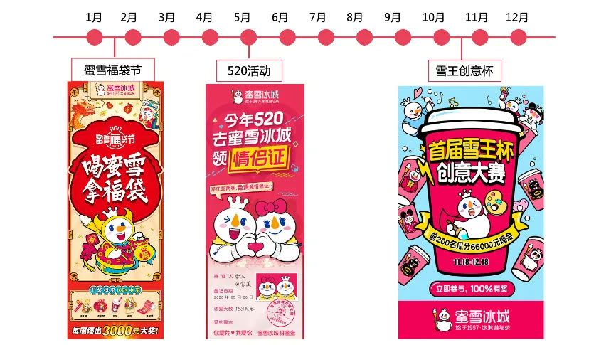

01 · 体系
从VIS转向可经营的超级符号
视觉规范解决一致性，超级符号还要解决识别、记忆和传播。雪王能够进入门店、产品和活动，成为持续经营的品牌主角。

02 · 母体
文化母体让品牌拥有共同创作基础
品牌不只输出单向宣传，而是提供大众熟悉、愿意参与的文化元素。消费者可以模仿、改编和再次传播。

03 · 角色
从雪人到雪王，建立专属身份
项目强化王冠、权杖与表情等识别，使普通雪人变为带有明确个性和身份的雪王。

04 · 歌曲
用熟悉旋律形成自动传播
品牌歌曲借助文化母体原理，把品牌语言装进容易记忆和复述的旋律，使听觉资产与雪王形象相互强化。

05 · 日历
用固定活动形成品牌生物钟
年度营销不不断更换主题，而是围绕雪王和核心资产持续迭代。时间积累让消费者形成稳定期待。
